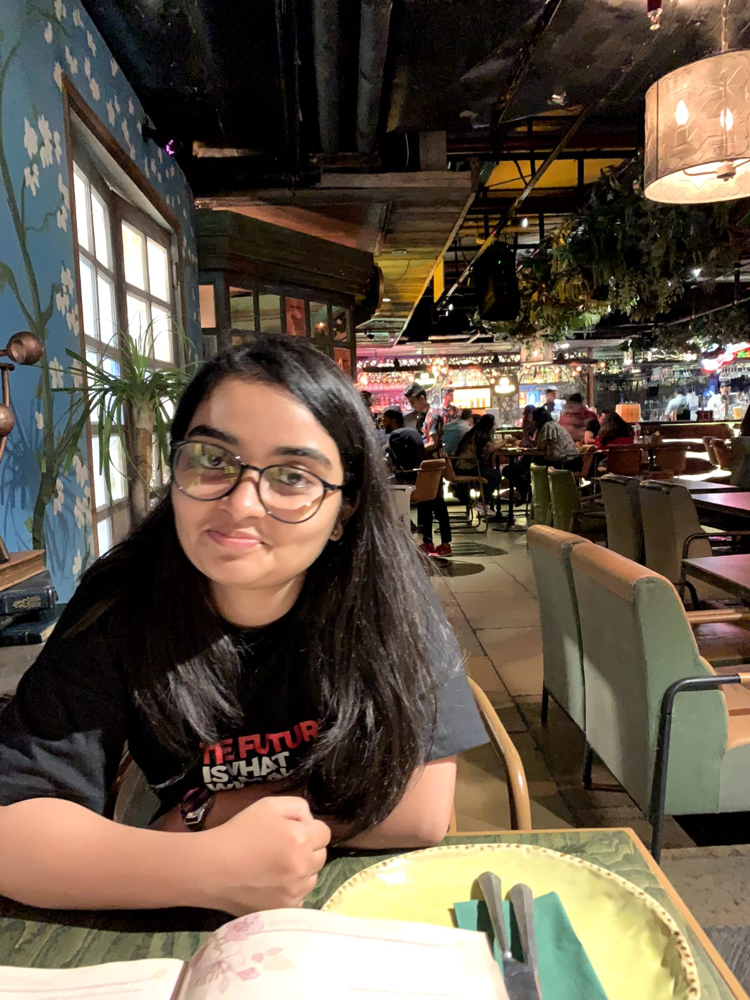

C A Anusha
Experienced DevOps Engineer with 8 years of overall experience, including 3 years specializing in DevOps and 5 years in embedded systems development. Skilled in automating infrastructure, managing cloud-native deployments, and building secure, scalable CI/CD pipelines. Proven ability to improve system reliability, streamline delivery workflows, and enhance performance through infrastructure as code, continuous integration, and proactive monitoring. Strong foundation in Linux systems, scripting, and system-level debugging, with hands-on experience across both product and platform engineering teams.
anusha.ca88@gmail.com / +971-567883160
Work Experience
🚧 DevOps Engineer | Stellantis, Bengaluru
December, 2023 - May, 2025
- Designed and maintained CI/CD pipelines for AUTOSAR-based ECU firmware using Jenkins and GitLab CI, improving build efficiency and reducing integration issues by 40%.
- Automated firmware flashing and regression testing using Python and Bash, enabling unattended validation on lab ECUs.
- Collaborated with QA to integrate test reports and automate log analysis using custom scripts and system tools.
- Monitored firmware behaviour on test benches using Linux system tools and cron-based scripts for early fault detection.
- Containerized embedded toolchains using Docker to ensure build environment consistency across teams.
🚧 DevOps Engineer | Lam Research Pvt Ltd, Bengaluru
June, 2021 - December, 2023
- Created automated build pipelines using Jenkins, Git, and CMake, improving software release consistency and reducing manual intervention.
- Wrote Bash scripts for build automation, log parsing, and deployment packaging to streamline internal workflows.
- Participated in debugging cross-platform hardware-software issues, leveraging system logs, Java debuggers, and Linux tools for root cause analysis.
- Collaborated with test and integration teams to ensure high availability and responsiveness of control applications deployed on custom Linux-based systems.
🚧 Embedded Engineer | Honeywell, Bengaluru
July, 2017 - June, 2021
Designed Remote IO Communication Protocol
- Pioneered the creation of the proprietary Honeywell protocol - CDAIO, a high-priority transfer protocol. This innovation expedited communication between a process controller and a remote IO module, significantly boosting data exchange efficiency.
- Innovated an event handling mechanism, optimizing the scheduling of responses within the CDAIO protocol. This enhancement led to smoother communication flows and more accurate data delivery.
- Elevated the performance of the CDAIO protocol, achieving an impressive 50ms response rate.